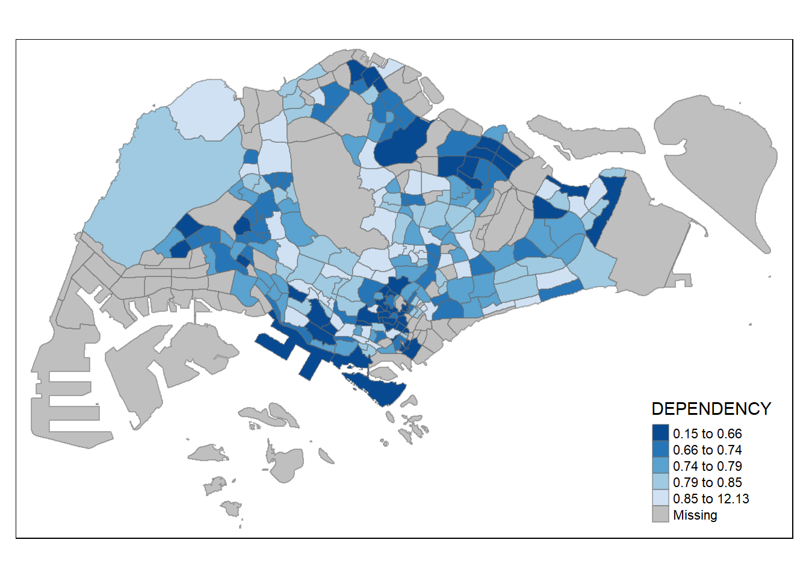

pacman::p_load(sf, tmap, tidyverse)Hands-on-Exercise 2: Thematic Mapping and GeoVisualisation with R
Topics:
Thematic Mapping
Creating maps to: visualise properties of geographic features that are unable to be naturally seen
Types of thematic maps:
- Choropleth maps (shading areas based on data values)
- Dot distribution maps (using dots to represent occurrences)
- Isarithmic maps (using contour lines to represent continuous data)
- Proportional symbol maps (using symbols of different sizes to represent data values)
Focus is on Choropleth maps
advantages
disadvantages
used for?
GeoVisualisation
Interacting and Interpreting geospatial data through visual representations
Using dynamic and interactive visual tools to explore spatial data and patterns
e.g:
3D models
Interactive maps
Time-based animations
VR environments (Virtual Reality)
Packages used
*tmap: thematic maps
tidyverse:
readr: for importing delimited text files
tidyr: tidying up data
dplyr: for data wrangling
sf: rendering simple features, handling geospatial data
Install packages
Importing data
Geospatial Data
mpsz = st_read(dsn = "data/geospatial/MasterPlan2014SubzoneBoundaryWebSHP", layer = "MP14_SUBZONE_WEB_PL")Reading layer `MP14_SUBZONE_WEB_PL' from data source `C:\marcus159260\IS415-GAA\hands-on-exercises\Hands-on_Ex02\data\geospatial\MasterPlan2014SubzoneBoundaryWebSHP' using driver `ESRI Shapefile' Simple feature collection with 323 features and 15 fields Geometry type: MULTIPOLYGON Dimension: XY Bounding box: xmin: 2667.538 ymin: 15748.72 xmax: 56396.44 ymax: 50256.33 Projected CRS: SVY21mpszSimple feature collection with 323 features and 15 fields Geometry type: MULTIPOLYGON Dimension: XY Bounding box: xmin: 2667.538 ymin: 15748.72 xmax: 56396.44 ymax: 50256.33 Projected CRS: SVY21 First 10 features: OBJECTID SUBZONE_NO SUBZONE_N SUBZONE_C CA_IND PLN_AREA_N 1 1 1 MARINA SOUTH MSSZ01 Y MARINA SOUTH 2 2 1 PEARL'S HILL OTSZ01 Y OUTRAM 3 3 3 BOAT QUAY SRSZ03 Y SINGAPORE RIVER 4 4 8 HENDERSON HILL BMSZ08 N BUKIT MERAH 5 5 3 REDHILL BMSZ03 N BUKIT MERAH 6 6 7 ALEXANDRA HILL BMSZ07 N BUKIT MERAH 7 7 9 BUKIT HO SWEE BMSZ09 N BUKIT MERAH 8 8 2 CLARKE QUAY SRSZ02 Y SINGAPORE RIVER 9 9 13 PASIR PANJANG 1 QTSZ13 N QUEENSTOWN 10 10 7 QUEENSWAY QTSZ07 N QUEENSTOWN PLN_AREA_C REGION_N REGION_C INC_CRC FMEL_UPD_D X_ADDR 1 MS CENTRAL REGION CR 5ED7EB253F99252E 2014-12-05 31595.84 2 OT CENTRAL REGION CR 8C7149B9EB32EEFC 2014-12-05 28679.06 3 SR CENTRAL REGION CR C35FEFF02B13E0E5 2014-12-05 29654.96 4 BM CENTRAL REGION CR 3775D82C5DDBEFBD 2014-12-05 26782.83 5 BM CENTRAL REGION CR 85D9ABEF0A40678F 2014-12-05 26201.96 6 BM CENTRAL REGION CR 9D286521EF5E3B59 2014-12-05 25358.82 7 BM CENTRAL REGION CR 7839A8577144EFE2 2014-12-05 27680.06 8 SR CENTRAL REGION CR 48661DC0FBA09F7A 2014-12-05 29253.21 9 QT CENTRAL REGION CR 1F721290C421BFAB 2014-12-05 22077.34 10 QT CENTRAL REGION CR 3580D2AFFBEE914C 2014-12-05 24168.31 Y_ADDR SHAPE_Leng SHAPE_Area geometry 1 29220.19 5267.381 1630379.3 MULTIPOLYGON (((31495.56 30... 2 29782.05 3506.107 559816.2 MULTIPOLYGON (((29092.28 30... 3 29974.66 1740.926 160807.5 MULTIPOLYGON (((29932.33 29... 4 29933.77 3313.625 595428.9 MULTIPOLYGON (((27131.28 30... 5 30005.70 2825.594 387429.4 MULTIPOLYGON (((26451.03 30... 6 29991.38 4428.913 1030378.8 MULTIPOLYGON (((25899.7 297... 7 30230.86 3275.312 551732.0 MULTIPOLYGON (((27746.95 30... 8 30222.86 2208.619 290184.7 MULTIPOLYGON (((29351.26 29... 9 29893.78 6571.323 1084792.3 MULTIPOLYGON (((20996.49 30... 10 30104.18 3454.239 631644.3 MULTIPOLYGON (((24472.11 29...Aspatial Data
popdata <- read_csv("data/aspatial/respopagesextod2011to2020.csv")Rows: 984656 Columns: 7 ── Column specification ──────────────────────────────────────────────────────── Delimiter: "," chr (5): PA, SZ, AG, Sex, TOD dbl (2): Pop, Time ℹ Use `spec()` to retrieve the full column specification for this data. ℹ Specify the column types or set `show_col_types = FALSE` to quiet this message.popdata# A tibble: 984,656 × 7 PA SZ AG Sex TOD Pop Time <chr> <chr> <chr> <chr> <chr> <dbl> <dbl> 1 Ang Mo Kio Ang Mo Kio Town Centre 0_to_4 Males HDB 1- and 2-Ro… 0 2011 2 Ang Mo Kio Ang Mo Kio Town Centre 0_to_4 Males HDB 3-Room Flats 10 2011 3 Ang Mo Kio Ang Mo Kio Town Centre 0_to_4 Males HDB 4-Room Flats 30 2011 4 Ang Mo Kio Ang Mo Kio Town Centre 0_to_4 Males HDB 5-Room and … 50 2011 5 Ang Mo Kio Ang Mo Kio Town Centre 0_to_4 Males HUDC Flats (exc… 0 2011 6 Ang Mo Kio Ang Mo Kio Town Centre 0_to_4 Males Landed Properti… 0 2011 7 Ang Mo Kio Ang Mo Kio Town Centre 0_to_4 Males Condominiums an… 40 2011 8 Ang Mo Kio Ang Mo Kio Town Centre 0_to_4 Males Others 0 2011 9 Ang Mo Kio Ang Mo Kio Town Centre 0_to_4 Females HDB 1- and 2-Ro… 0 2011 10 Ang Mo Kio Ang Mo Kio Town Centre 0_to_4 Females HDB 3-Room Flats 10 2011 # ℹ 984,646 more rows#see all columns spec(popdata)cols( PA = col_character(), SZ = col_character(), AG = col_character(), Sex = col_character(), TOD = col_character(), Pop = col_double(), Time = col_double() )
Data Wrangling
tidyr -> pivot_wider()
dplyr -> mutate(), filter(), group_by(), select()
popdata2020 <- popdata %>% filter(Time == 2020) %>% group_by(PA, SZ, AG) %>% summarise(`POP` = sum(`Pop`)) %>% ungroup()%>% pivot_wider(names_from=AG, values_from=POP) %>% mutate(YOUNG = rowSums(.[3:6]) +rowSums(.[12])) %>% mutate(`ECONOMY ACTIVE` = rowSums(.[7:11])+ rowSums(.[13:15]))%>% mutate(`AGED`=rowSums(.[16:21])) %>% mutate(`TOTAL`=rowSums(.[3:21])) %>% mutate(`DEPENDENCY` = (`YOUNG` + `AGED`) /`ECONOMY ACTIVE`) %>% select(`PA`, `SZ`, `YOUNG`, `ECONOMY ACTIVE`, `AGED`, `TOTAL`, `DEPENDENCY`)`summarise()` has grouped output by 'PA', 'SZ'. You can override using the `.groups` argument.popdata2020# A tibble: 332 × 7 PA SZ YOUNG `ECONOMY ACTIVE` AGED TOTAL DEPENDENCY <chr> <chr> <dbl> <dbl> <dbl> <dbl> <dbl> 1 Ang Mo Kio Ang Mo Kio Town Cen… 1440 2610 760 4810 0.843 2 Ang Mo Kio Cheng San 6640 15460 6050 28150 0.821 3 Ang Mo Kio Chong Boon 6150 13950 6470 26570 0.905 4 Ang Mo Kio Kebun Bahru 5540 12090 5120 22750 0.882 5 Ang Mo Kio Sembawang Hills 2100 3410 1310 6820 1 6 Ang Mo Kio Shangri-La 3960 8420 3610 15990 0.899 7 Ang Mo Kio Tagore 2220 4200 1530 7950 0.893 8 Ang Mo Kio Townsville 4690 11450 5100 21240 0.855 9 Ang Mo Kio Yio Chu Kang 0 0 0 0 NaN 10 Ang Mo Kio Yio Chu Kang East 1220 2300 750 4270 0.857 # ℹ 322 more rows
Joining data
convert PA and SZ to uppercase (toupper)
- because data in PA and SZ are in uppercase and lowercase, while data in mpsz (e.g SUBZONE_N and PLN_AREA_N) are in uppercase.
popdata2020 <- popdata2020 %>% mutate_at(.vars = vars(PA, SZ), .funs = list(toupper)) %>% filter(`ECONOMY ACTIVE` > 0)join attribute data (popdata2020) and geospatial data (mpsz) using left_join()
- using common identifier: SUBZONE_N = SZ
mpsz_pop2020 <- left_join(mpsz, popdata2020, by = c("SUBZONE_N" = "SZ"))
save mpsz_pop2020 data as an r object (write_rds)
write_rds(mpsz_pop2020, "data/rds/mpszpop2020.rds")awdawd
Plotting Choropleth maps
using qtm()
to take note of:
tmap_mode() with “plot” option is used to produce a static map. For interactive mode, “view” option should be used.
fill argument is used to map the attribute (i.e. DEPENDENCY)
disadvantage of choropleth maps:
- it makes aesthetics of individual layers harder to control.
tmap_mode("plot")tmap mode set to plottingqtm(mpsz_pop2020,
fill = "DEPENDENCY")
using tmap’s elements (using palette: red)
tm_shape(mpsz_pop2020)+ tm_fill("DEPENDENCY", style = "quantile", palette = "red", title = "Dependency ratio") + tm_layout(main.title = "Distribution of Dependency Ratio by planning subzone", main.title.position = "center", main.title.size = 1.2, legend.height = 0.45, legend.width = 0.35, frame = TRUE) + tm_borders(alpha = 0.5) + tm_compass(type="8star", size = 2) + tm_scale_bar() + tm_grid(alpha =0.2) + tm_credits("Source: Planning Sub-zone boundary from Urban Redevelopment Authorithy (URA)\n and Population data from Department of Statistics DOS", position = c("left", "bottom"))drawing base map
using tm_shape(input data variable)
using tm_polygons() -> draw the planning subzone polygons
tm_shape(mpsz_pop2020) + tm_polygons()
- input DEPENDENCY into tm_polygons()
tm_shape(mpsz_pop2020) + tm_polygons("DEPENDENCY")tm_polygons()
default missing value: grey
default color scheme (“DEPENDENCY”): YlOrRd of ColorBrewer
default interval binning: pretty
wrapper of tm_fill() and tm_borders()
tm_borders()
lwd -> border line width, default is 1
alpha -> transparency in between 0 (totally transparent) and 1 (not transparent), default is 1
col -> border color, default is black
tm_shape(mpsz_pop2020)+ tm_fill("DEPENDENCY") + tm_borders(lwd = 0.1, alpha = 1, col = "blue")
Data Classification methods of tmap
important to take note:
In R, the
+operator should be at the end of a line rather than the beginning of the next line.wrong
tm_shape(mpsz_pop2020) + tm_fill("DEPENDENCY", n = 5, style = 'equal')+ tm_borders(alpha = 0.5)
correct
tm_shape(mpsz_pop2020) +tm_fill("DEPENDENCY", n = 5, style = 'equal') +tm_borders(alpha = 0.5)
point of classification:
is to take a large number of observations and group them into data ranges and classes
tmap data classification methods:
pretty (default)
fixed
sd
equal
quantile
kmeans
hclust
bclust
jenks
define classification method (use style argument of tm_fill())
DIstribution Comparison (quantile vs equal) -> quantile is more evenly distributed than equal
- quantile
tm_shape(mpsz_pop2020)+
tm_fill("DEPENDENCY",
n = 5,
style = "quantile") +
tm_borders(alpha = 0.5)- equal
tm_shape(mpsz_pop2020) +
tm_fill("DEPENDENCY", n=5, style='equal') +
tm_borders(alpha = 0.5) DIY
- sd
tm_shape(mpsz_pop2020)+ tm_fill("DEPENDENCY", n = 5, style = "sd") + tm_borders(alpha = 0.5)
Applying Custom break to Choropleth Maps
descriptive statistics
summary(mpsz_pop2020$DEPENDENCY)Min. 1st Qu. Median Mean 3rd Qu. Max. NA's 0.1111 0.7147 0.7866 0.8585 0.8763 19.0000 92setting break points (under tm_fill)
tm_shape(mpsz_pop2020)+ tm_fill("DEPENDENCY", breaks = c(0, 0.60, 0.70, 0.80, 0.90, 1.00)) + tm_borders(alpha = 0.5)Warning: Values have found that are higher than the highest break
Color Scheme
tmap uses color packages from RColorBrewer package
palette argument (from tm_fill)
tm_shape(mpsz_pop2020)+ tm_fill("DEPENDENCY", n = 6, style = "quantile", palette = "Blues") + tm_borders(alpha = 0.5)reverse color shading add “-” prefix in front of color name
tm_shape(mpsz_pop2020)+ tm_fill("DEPENDENCY", style = "quantile", palette = "-Blues") + tm_borders(alpha = 0.5)
Map Layouts
Map Legends (tm_layout)
tm_shape(mpsz_pop2020)+ tm_fill("DEPENDENCY", style = "jenks", palette = "Blues", legend.hist = TRUE, legend.is.portrait = TRUE, legend.hist.z = 0.1) + tm_layout(main.title = "Distribution of Dependency Ratio by planning subzone \n(Jenks classification)", main.title.position = "center", main.title.size = 1, legend.height = 0.45, legend.width = 0.35, legend.outside = FALSE, legend.position = c("right", "bottom"), frame = FALSE) + tm_borders(alpha = 0.5)Map Style
- default for tmap_style: white
tm_shape(mpsz_pop2020)+ tm_fill("DEPENDENCY", style = "quantile", palette = "-Greens") + tm_borders(alpha = 0.5) + tmap_style("classic")tmap style set to "classic"other available styles are: "white", "gray", "natural", "cobalt", "col_blind", "albatross", "beaver", "bw", "watercolor"Cartographic Furniture
- tm_compass, tm_scale_bar, tm_grid, tm_credits
tm_shape(mpsz_pop2020)+ tm_fill("DEPENDENCY", style = "quantile", palette = "Blues", title = "No. of persons") + tm_layout(main.title = "Distribution of Dependency Ratio \nby planning subzone", main.title.position = "center", main.title.size = 1.2, legend.height = 0.45, legend.width = 0.35, frame = TRUE) + tm_borders(alpha = 0.5) + tm_compass(type="8star", size = 2) + tm_scale_bar(width = 0.15) + tm_grid(lwd = 0.1, alpha = 0.2) + tm_credits("Source: Planning Sub-zone boundary from Urban Redevelopment Authorithy (URA)\n and Population data from Department of Statistics DOS", position = c("left", "bottom"))
Drawing Small Multiple Choropleth Maps
Small Multiple Maps, also known as facet maps, composed of many maps side-by-side and can be stacked vertically.
purpose: to visualise how spatial relationships change with other variables, such as time.
3 ways to plot small multiple maps
by assigning multiple values to at least one of the aesthetic arguments,
by defining a group-by variable in tm_facets()
by creating multiple stand-alone maps with tmap_arrange()
By assigning multiple values to at least one of the aesthetic arguments
define ncols in tm_fill()
- “YOUNG” and “AGED”
tm_shape(mpsz_pop2020)+ tm_fill(c("YOUNG", "AGED"), style = "equal", palette = "Blues") + tm_layout(legend.position = c("right", "bottom")) + tm_borders(alpha = 0.5) + tmap_style("white")tmap style set to "white"other available styles are: "gray", "natural", "cobalt", "col_blind", "albatross", "beaver", "bw", "classic", "watercolor"tm_shape(mpsz_pop2020)+ tm_polygons(c("DEPENDENCY","AGED"), style = c("equal", "quantile"), palette = list("Blues","Greens")) + tm_layout(legend.position = c("right", "bottom"))By defining a group-by variable in tm_facets()
tm_shape(mpsz_pop2020) + tm_fill("DEPENDENCY", style = "quantile", palette = "Blues", thres.poly = 0) + tm_facets(by="REGION_N", free.coords=TRUE, drop.shapes=TRUE) + tm_layout(legend.show = FALSE, title.position = c("center", "center"), title.size = 20) + tm_borders(alpha = 0.5)Warning: The argument drop.shapes has been renamed to drop.units, and is therefore deprecatedby creating multiple stand-alone maps with tmap_arrange()
assigning variables to hold the tmap information
use tmap_arrange to plot both maps against each other
youngmap <- tm_shape(mpsz_pop2020)+ tm_polygons("YOUNG", style = "quantile", palette = "Blues") agedmap <- tm_shape(mpsz_pop2020)+ tm_polygons("AGED", style = "quantile", palette = "Blues") tmap_arrange(youngmap, agedmap, asp=1, ncol=2)
Use Selection Function to map spatial objects meeting the selection criterion
alternative to creating small multiple maps
specify a column (REGION_N) using $
tm_shape(mpsz_pop2020[mpsz_pop2020$REGION_N=="CENTRAL REGION", ])+
tm_fill("DEPENDENCY",
style = "quantile",
palette = "Blues",
legend.hist = TRUE, #is a histogram
legend.is.portrait = TRUE,
legend.hist.z = 0.1) +
tm_layout(legend.outside = TRUE,
legend.height = 0.45,
legend.width = 5.0,
legend.position = c("right", "bottom"),
frame = FALSE) +
tm_borders(alpha = 0.5)Warning in pre_process_gt(x, interactive = interactive, orig_crs =
gm$shape.orig_crs): legend.width controls the width of the legend within a map.
Please use legend.outside.size to control the width of the outside legendReferences
- All about tmap package
- Geospatial Data Wrangling
- Data Wrangling
dplyr
tidyverse